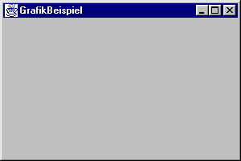
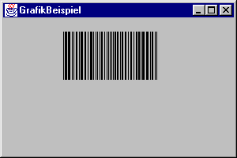
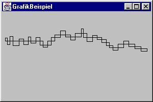
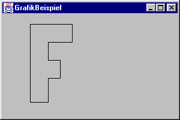
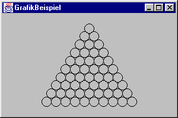
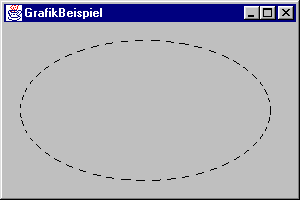

24.3 Elementare Grafikroutinen
Die Klasse Graphics
stellt neben vielen anderen Funktionen auch eine Sammlung von linienbasierten
Zeichenoperationen zur Verfügung. Diese sind zur Darstellung
von einfachen Linien, Rechtecken oder Polygonen sowie von Kreisen,
Ellipsen und Kreisabschnitten geeignet. Wir wollen im Folgenden jede
dieser Funktionsgruppen vorstellen und ihre Anwendung an einem Beispiel
zeigen.
001 /* GrafikBeispiel.java */
002
003 import java.awt.*;
004 import java.awt.event.*;
005
006 public class GrafikBeispiel
007 extends Frame
008 {
009 public static void main(String[] args)
010 {
011 GrafikBeispiel wnd = new GrafikBeispiel();
012 }
013
014 public GrafikBeispiel()
015 {
016 super("GrafikBeispiel");
017 addWindowListener(new WindowClosingAdapter(true));
018 setBackground(Color.lightGray);
019 setSize(300,200);
020 setVisible(true);
021 }
022
023 public void paint(Graphics g)
024 {
025 //wird in den folgenden Beispielen überlagert
026 }
027 }
|
GrafikBeispiel.java |
Listing 24.4: Rahmenprogramm für nachfolgende Beispiele
Da die paint-Methode
in diesem Programm noch keine Ausgabeoperationen enthält, erzeugt
das Programm lediglich ein leeres Fenster mit dem Titel »Grafikbeispiel«:

Abbildung 24.2: Ein einfaches Fenster
- Die Klasse GrafikBeispiel
ist aus Frame
abgeleitet, um ein Top-Level-Window darzustellen.
- Sie enthält eine statische Methode main,
die als Eintrittspunkt für das Programm dient und das Fensterobjekt
erzeugt.
- Der Konstruktor der Klasse enthält drei Methodenaufrufe,
setBackground,
setSize
und setVisible,
um die Farbe des Fensterhintergrunds und seine Größe einzustellen
und das Fenster auf dem Bildschirm sichtbar zu machen.
- Weiterhin enthält der Konstruktor einen Aufruf von addWindowListener,
mit dem ein WindowClosingAdapter
zum Schließen des Fensters hinzugefügt wird.
- Schließlich gibt es eine Methode paint,
die hier noch leer ist, aber in den nachfolgenden Beispielen dieses
Kapitels den Aufruf verschiedener Grafikroutinen zeigt.
24.3.1 Linie
Zieht eine Linie von der Position (x1,y1)
zur Position (x2,y2). Beide
Punkte dürfen an beliebiger Stelle im Fenster liegen, das Einhalten
einer bestimmten Reihenfolge ist nicht erforderlich. Teile der Ausgabe,
die außerhalb des darstellbaren Bereichs liegen, werden, wie
in grafikorientierten Systemen üblich, unterdrückt.
Das folgende Beispiel zeichnet eine Reihe von gleich hohen Linien,
deren horizontaler Abstand durch einen Zufallszahlengenerator bestimmt
wird. Das Ergebnis hat dadurch Ähnlichkeit mit einem Barcode
(ist aber keiner):
001 /* Linien.inc */
002
003 public void paint(Graphics g)
004 {
005 int i;
006 int x = 80;
007
008 for (i=0; i<60; ++i) {
009 g.drawLine(x,40,x,100);
010 x += 1+3*Math.random();
011 }
012 }
|
Linien.inc |
Listing 24.5: Ausgabe von Linien

Abbildung 24.3: Ausgabe von Linien
24.3.2 Rechteck
Zeichnet ein Rechteck der Breite width
und der Höhe height, dessen
linke obere Ecke an der Position (x,y)
liegt. Eine größere Breite dehnt das Rechteck nach rechts
aus, eine größere Höhe nach unten.
Eine Variante von drawRect
ist die Methode drawRoundRect:
public void drawRoundRect(
int x, int y,
int width, int height,
int arcWidth, int arcHeight
)
|
java.awt.Graphics |
Gegenüber drawRect
sind hier die Parameter arcWidth
und arcHeight dazugekommen.
Sie bestimmen den horizontalen und vertikalen Radius des Ellipsenabschnitts,
der zur Darstellung der runden »Ecke« verwendet wird.
Das folgende Beispiel zeichnet eine Kette von nebeneinanderliegenden
Rechtecken, deren Größe durch einen Zufallszahlengenerator
bestimmt wird. Der Zufallszahlengenerator entscheidet auch, ob ein
Rechteck an der Ober- oder Unterseite seines Vorgängers festgemacht
wird:
001 /* Rechtecke.inc */
002
003 public void paint(Graphics g)
004 {
005 int x = 10, y = 80;
006 int sizex, sizey = 0;
007
008 while (x < 280 && y < 180) {
009 sizex = 4 + (int) (Math.random() * 9);
010 if (Math.random() > 0.5) {
011 y += sizey;
012 sizey = 4 + (int) (Math.random() * 6);
013 } else {
014 sizey = 4 + (int) (Math.random() * 6);
015 y -= sizey;
016 }
017 g.drawRect(x,y,sizex,sizey);
018 x += sizex;
019 }
020 }
|
Rechtecke.inc |
Listing 24.6: Ausgabe von Rechtecken

Abbildung 24.4: Ausgabe von Rechtecken
24.3.3 Polygon
Mit Hilfe der Methode drawPolygon
ist es möglich, Linienzüge zu zeichnen, bei denen das Ende
eines Elements mit dem Anfang des jeweils nächsten verbunden
ist:
drawPolygon
erwartet drei Parameter. Der erste ist ein Array mit einer Liste der
x-Koordinaten und der zweite ein Array mit einer Liste der
y-Koordinaten. Beide Arrays müssen so synchronisiert sein,
dass ein Paar von Werten an derselben Indexposition immer auch ein
Koordinatenpaar ergibt. Die Anzahl der gültigen Koordinatenpaare
wird durch den dritten Parameter festgelegt.
Eine zweite Variante, Polygone zu zeichnen, besteht darin, zunächst
ein Objekt der Klasse Polygon
zu konstruieren und dieses dann an drawPolygon
zu übergeben. Polygon
besitzt zwei Konstruktoren, von denen einer parameterlos ist und der
andere dieselben Parameter wie die oben beschriebene Methode drawPolygon
besitzt:
public void Polygon()
public void Polygon(int[] arx, int[] ary, int cnt)
|
java.awt.Polygon |
Mit Hilfe der Methode addPoint
kann ein Polygon um weitere Punkte erweitert werden. Schließlich
kann das fertige Polygon an die Methode drawPolygon
übergeben werden, die dann wie folgt aufzurufen ist:
Das folgende Beispiel gibt den Buchstaben »F« mit Hilfe
eines geschlossenen Polygons aus:
001 /* Polygon.inc */
002
003 public void paint(Graphics g)
004 {
005 int[] arx = {50,50,120,120,80,80,100,100,80,80};
006 int[] ary = {170,40,40,70,70,100,100,130,130,170};
007
008 g.drawPolygon(arx,ary,arx.length);
009 }
|
Polygon.inc |
Listing 24.7: Ausgabe eines Polygons

Abbildung 24.5: Ausgabe eines Polygons
24.3.4 Kreis
Die Graphics-Klasse
von Java erlaubt sowohl das Zeichnen von Kreisen als auch von Ellipsen
und Kreisabschnitten. Ein Kreis wird dabei als Spezialisierung einer
Ellipse angesehen und beide Objekte werden mit der Methode drawOval
gezeichnet:
Dass diese Vorgehensweise zwar untypisch ist, aber durchaus ihre Vorteile
haben kann, zeigt das folgende Beispiel:
001 /* Kreise.inc */
002
003 public void paint(Graphics g)
004 {
005 int r = 8;
006 int i, j;
007 int x, y;
008
009 for (i=1; i<=10; ++i) {
010 x = 150 - r * i;
011 y = (int) (40 + (i - 1) * 1.7321 * r);
012 for (j=1; j<=i; ++j) {
013 g.drawOval(x,y,2*r,2*r);
014 x += 2 * r;
015 }
016 }
017 }
|
Kreise.inc |
Listing 24.8: Ausgabe von Kreisen
Das Programm gibt dabei eine Pyramide von Kreisen aus. Da die an drawOval
übergebenen Parameter bereits das umgebende Rechteck bezeichnen,
kann die Figur wie eine Pyramide aus Rechtecken dargestellt werden:

Abbildung 24.6: Ausgabe von Kreisen
24.3.5 Kreisbogen
Ein Kreisbogen ist ein zusammenhängender Abschnitt der Umfangslinie
eines Kreises. Er kann mit der Methode drawArc
gezeichnet werden:
public void drawArc(
int x, int y, int width, int height,
int startAngle, int arcAngle
)
|
java.awt.Graphics |
Die ersten vier Parameter bezeichnen dabei den Kreis bzw. die Ellipse
so, wie dies auch bei drawOval
der Fall war. Mit startAngle
wird der Winkel angegeben, an dem mit dem Kreisabschnitt begonnen
werden soll, und arcAngle gibt
den zu überdeckenden Bereich an. Dabei bezeichnet ein Winkel
von 0 Grad die 3-Uhr-Position und positive Winkel werden entgegen
dem Uhrzeigersinn gemessen. Als Einheit wird Grad verwendet
und nicht das sonst übliche Bogenmaß.
Das folgende Beispiel zeichnet durch wiederholten Aufruf der Methode
drawArc
eine Ellipse mit einer gestrichelten Umfangslinie. Ein Aufruf zeichnet
dabei jeweils 4 Grad der Ellipse und lässt dann eine Lücke
von 3 Grad, bevor das nächste Stück gezeichnet wird:
001 /* KreisBoegen.inc */
002
003 public void paint(Graphics g)
004 {
005 int line = 4;
006 int gap = 3;
007 int angle = 0;
008
009 while (angle < 360) {
010 g.drawArc(20,40,250,140,angle,line);
011 angle += gap + line;
012 }
013 }
|
KreisBoegen.inc |
Listing 24.9: Ausgabe von Kreisbögen

Abbildung 24.7: Ausgabe von Kreisbögen